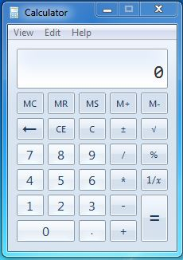

Created: 2016-08-10 Wed 22:37
Vamos começar aplicando os conhecimentos adquiridos nos últimos dois dias eum um projeto de Engenharia Civil.
Nosso objetivo é criar um programa que toma as características de uma viga biengastada sob efeito de um carregamento e calcula o diagrama de momento fletor.
A ideia é criar um programa de análise estrutural simplificado.
Utilizaremos as equações obtidas de forma analítica para calcular o momento em cada ponto.
Carga Uniforme: m(x) = - q*L*L/2 + q*L*x/2 - q*x*x/2 Carga Concentrada: m(x) = -q*L/8 + q*x/2 (para x = 0 a L/2)

Uma das melhores ferramentas para criar GUIs em Python
Multiplataforma entre Windows, Linux e Mac
Simples e intuitivo
from PyQt4 import QtGui
import sys
def main():
app = QtGui.QApplication(sys.argv)
GUI = MainWindow()
sys.exit(app.exec_())
main()
class MainWindow(QtGui.QMainWindow):
def __init__(self, parent=None):
super(MainWindow, self).__init__(parent)
self.show()
# Dentro do __init__ de MainWindow
self.setGeometry(100, 100, 300, 400)
self.setWindowTitle('Calculadora')
self.setWindowIcon(QtGui.QIcon('icon_64.png'))
# Dentro do __init__ de MainWindow
mainWidget = MainWidget(self)
self.setCentralWidget(mainWidget)
class MainWidget(QtGui.QWidget):
def __init__(self, parent):
super(MainWidget, self).__init__(parent)
# Dentro do __init__ de MainWidget
self.lb1 = QtGui.QLabel('Eu sou um texto', self)
self.le1 = QtGui.QLineEdit(self)
self.te1 = QtGui.QTextEdit(self)
self.rbt1 = QtGui.QRadioButton('Option 1', self)
self.cbt1 = QtGui.QCheckBox('C1', self)
self.bt1 = QtGui.QPushButton('Sair', self)
self.cbox = QtGui.QComboBox(self)
self.cbox.addItem('Op1')
self.cbox.addItem('Op2')
self.lbl1.move(30, 50)
# Dentro do __init__ de MainWidget
layout = QtGui.QGridLayout()
layout.addWidget(self.lb1, 1, 1)
layout.addWidget(self.cbox, 1, 2)
layout.addWidget(self.bt1, 2, 1, 1, 2)
self.setLayout(layout)
# Dentro do __init__ da MainWidget
self.bt1.clicked.connect(self.exit_gui)
def exit_gui(self):
sys.exit()
Vamos utilizar os conhecimentos adquiridos para construir uma calculadora capaz de realizar contas simples.
# Dentro do __init__ de MainWidget
self.lb1 = QtGui.QLabel('Primeiro Numero: ', self)
self.lb2 = QtGui.QLabel('Segundo Numero: ', self)
self.lb3 = QtGui.QLabel('Resultado: ', self)
self.bt1 = QtGui.QPushButton('+', self)
self.bt2 = QtGui.QPushButton('-', self)
self.bt3 = QtGui.QPushButton('X', self)
self.bt4 = QtGui.QPushButton('/', self)
self.le1 = QtGui.QLineEdit(self)
self.le2 = QtGui.QLineEdit(self)
self.le3 = QtGui.QLineEdit(self)
# Dentro do __init__ de MainWidget
layout = QtGui.QGridLayout()
layout.addWidget(self.lb1, 1, 1, 1, 2)
layout.addWidget(self.le1, 1, 3, 1, 2)
layout.addWidget(self.lb2, 2, 1, 1, 2)
layout.addWidget(self.le2, 2, 3, 1, 2)
layout.addWidget(self.bt1, 3, 1)
layout.addWidget(self.bt2, 3, 2)
layout.addWidget(self.bt3, 3, 3)
layout.addWidget(self.bt4, 3, 4)
layout.addWidget(self.lb3, 4, 1, 1, 2)
layout.addWidget(self.le3, 4, 3, 1, 2)
self.setLayout(layout)
# Dentro do __init__ de MainWidget
self.bt1.clicked.connect(self.mais)
self.bt2.clicked.connect(self.menos)
self.bt3.clicked.connect(self.vezes)
self.bt4.clicked.connect(self.div)
def mais(self):
a = float(self.le1.text())
b = float(self.le2.text())
self.le3.setText(str(a+b))
def menos(self):
a = float(self.le1.text())
b = float(self.le2.text())
self.le3.setText(str(a-b))
def vezes(self):
a = float(self.le1.text())
b = float(self.le2.text())
self.le3.setText(str(a*b))
def div(self):
a = float(self.le1.text())
b = float(self.le2.text())
self.le3.setText(str(a/b))
from T09_Diagrams import Moment
from PyQt4 import QtGui
import sys
def main():
app = QtGui.QApplication(sys.argv)
GUI = MainWindow()
sys.exit(app.exec_())
if __name__ == '__main__':
main()
class MainWindow(QtGui.QMainWindow):
def __init__(self, parent=None):
super(MainWindow, self).__init__(parent)
mainWidget = MainWidget(self)
self.setCentralWidget(mainWidget)
self.setGeometry(100, 100, 300, 400)
self.setWindowTitle('CivCom Diagram Calculator')
self.setWindowIcon(QtGui.QIcon('icon_64.png')
self.quit_act()
self.about_act()
self.menu_act()
self.show()
# self.showMaximized()
# self.showFullScreen()
def quit_act(self):
self.quitAct = QtGui.QAction('Sair', self)
self.quitAct.setShortcut('Ctrl+Q')
self.quitAct.setStatusTip('Fecha o programa.')
self.quitAct.triggered.connect(sys.exit)
def about_act(self):
self.aboutmsg = QtGui.QMessageBox()
self.aboutmsg.setText('CivCom Diagram Calculator - Version 0.1')
self.aboutmsg.setInformativeText('Esse programa toma as variaveis de uma viga biengastada ' +
'e do carregamento sobre ela e gera os diagramas de momento ' +
'e deflexao da viga')
self.aboutmsg.setWindowTitle('CivCom Diagram Calculator')
self.aboutmsg.setIconPixmap(QtGui.QPixmap('logo-90.png'))
self.aboutAct = QtGui.QAction('Sobre', self)
self.aboutAct.setShortcut('F1')
self.aboutAct.setStatusTip('Mostra as informacoes do programa')
self.aboutAct.triggered.connect(self.aboutmsg.exec_)
def menu_act(self):
# Menus Principais
mainMenu = self.menuBar()
fileMenu = mainMenu.addMenu('Arquivo')
helpMenu = mainMenu.addMenu('Ajuda')
fileMenu.addAction(self.quitAct)
helpMenu.addAction(self.aboutAct)
self.statusBar()
class MainWidget(QtGui.QWidget):
def __init__(self, parent):
super(MainWidget, self).__init__(parent)
# Objetos
# Layout
# Metodos
# Dentro de __init__ de MainWidget
self.lbl1 = QtGui.QLabel('Tipo de Carga: ')
self.dbtn = QtGui.QComboBox(self)
self.dbtn.addItem('Uniforme')
self.dbtn.addItem('Concentrada')
self.lbl2 = QtGui.QLabel('Comprimento da Barra (m): ')
self.ledit1 = QtGui.QLineEdit(self)
self.ledit1.setPlaceholderText('Digite o comprimento da barra aqui.')
self.lbl3 = QtGui.QLabel('Magnitude do Carregamento (kN ou kN/m): ')
self.ledit2 = QtGui.QLineEdit(self)
self.ledit2.setPlaceholderText('Digite a magnitude do carregamento aqui.')
self.pshbtn1 = QtGui.QPushButton('Plotar Diagrama', self)
self.pshbtn1.clicked.connect(self.calc_diagram)
# Dentro de __init__ de MainWidget
grid = QtGui.QGridLayout()
grid.addWidget(self.lbl1, 1, 1)
grid.addWidget(self.dbtn, 1, 2)
grid.addWidget(self.lbl2, 2, 1)
grid.addWidget(self.ledit1, 2, 2)
grid.addWidget(self.lbl3, 3, 1)
grid.addWidget(self.ledit2, 3, 2)
grid.addWidget(self.pshbtn1, 4, 1, 1, 2)
self.setLayout(grid)
def calc_diagram(self):
ltype = self.dbtn.currentText()
length = float(self.ledit1.text())
magnitude = float(self.ledit2.text())
moment_d = Moment(ltype, length, magnitude)
moment_d.plot_m_diagram()
Outros Carregamentos
Outros Apoios
Calcular Deflexão
Método das Diferenças Finitas
Método dos Elementos Finitos
Método da Rigidez Direta